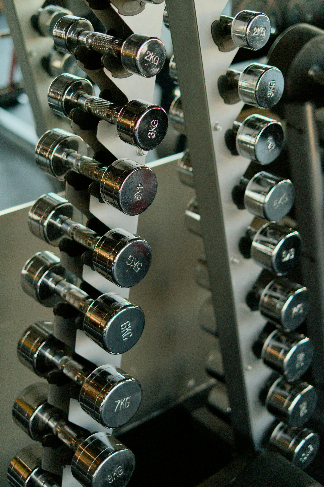

Nutrition & Bodybuilding Tools
Interactive calculators used for my actual cut — ICT280 Project 4
Welcome Back
For Project 3, I wrote about nutrition and bodybuilding. For Project 4, I am taking that same topic one step further by building two interactive tools inspired by my actual coaching plan and weekly split. As an Application Developer apprentice, I am learning how to combine HTML, CSS, and JavaScript — the three pieces every front-end application uses.
Below you will find a cut progress estimator where a user can enter their current weight and goal weight to get a rough estimate/timeline. I also included my weekly workout day picker based on the actual split I am currently running.

Tool 1: Cut Progress Estimator
This tool lets a user enter their current weight and goal weight to get a simple estimate for how long a cut might take at around 2.5 pounds per week. That pace is based on my own current coaching plan, so this is more of a learning tool than a universal recommendation.
Example daily target from my current cut: 1,875 calories
Example macros: 183g protein | 177g carbs | 45g fat
My example cut: 225 lbs → 185 lbs
Example pace: about 2.5 lbs lost per week
Enter your name, current weight, and goal weight to see your estimate.
How the Estimator Works
- Weight to lose = current weight − goal weight.
- Weeks left = pounds to lose ÷ 2.5 lbs per week.
- Goal date is estimated by adding those weeks to today.
- Macros shown below are an example from my current coaching plan, not a custom plan for every user.
The pace of 2.5 lbs per week is aggressive and comes from my own current coaching plan. If someone is planning a real cut, they should work with a qualified coach or healthcare professional instead of copying this exactly.
Tool 2: My Weekly Workout Split

This is the actual split I am running right now. Three lifting sessions with cardio six days a week, alternating 30 minutes on lifting days and 15 minutes on the days in between. Sunday is a full rest day.
Pick any day from the dropdown to see exactly what I am doing that day.
Pick a day from the dropdown to see the plan.
What I Learned in Project 4
Project 4 was the first time I had to make my page actually do something. Up until now, my projects were static — they looked nice but they did not react to anything. Adding JavaScript changed that completely.
New Concepts I Used
- Event listeners — the page waits for a button click before doing anything.
- getElementById — how I grab values out of the form fields.
- innerHTML — how the script writes new content into the result box.
- If / else if statements — the estimator shows different messages depending on the size of the cut.
- Date objects — the tracker projects a goal date by adding weeks to today’s date.
- Objects and arrays — the workout split is stored as a structured object with one entry per day.
- Loops — the workout picker uses a for-loop to print every exercise into a table.
- Media queries — the page rearranges itself for tablets and phones instead of forcing one fixed layout.
Every one of those concepts is something I will keep using in my apprenticeship. Real applications are full of forms, buttons, and conditional logic — just at a much bigger scale. Starting small like this is how I am building toward that.
Want to see where I started? Check out Project 3 for the static version of this same topic.